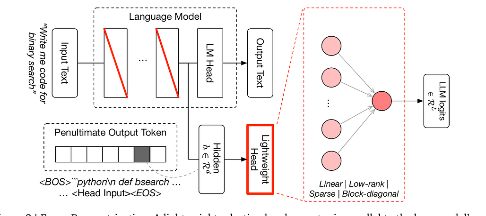
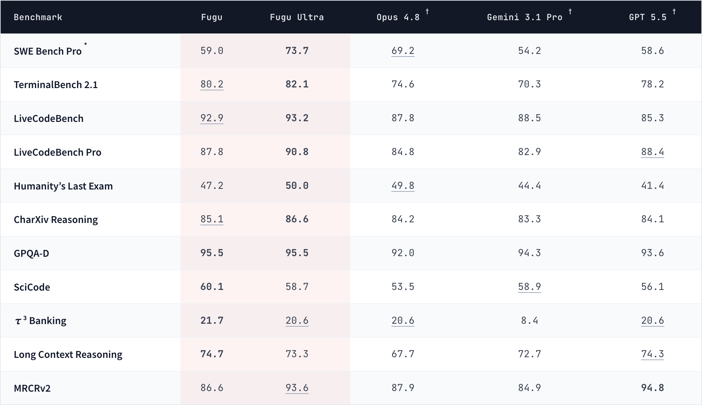

출처:
- Sakana AI: Sakana Fugu — One Model to Command Them All
- Sakana Fugu Technical Report
- Sakana Fugu 제품 페이지
- PyTorchKR 정리: Sakana AI, 여러 LLM을 하나의 모델처럼 오케스트레이션하는 Fugu와 Fugu Ultra 출시

Sakana AI가 Fugu와 Fugu Ultra를 공개했습니다. 한 줄로 말하면 이렇습니다.
여러 모델을 직접 이어 붙이는 멀티에이전트 시스템을, 사용자는 하나의 모델 API처럼 부르게 만들겠다.
요즘 에이전트 논의가 “모델 하나가 얼마나 똑똑한가”에서 “여러 모델과 도구를 어떻게 묶어 오래 일하게 만들 것인가”로 이동하고 있는데, Fugu는 그 흐름을 꽤 노골적으로 제품화한 사례입니다.
Q1. Fugu는 그냥 또 하나의 LLM인가요?
A. 겉으로는 하나의 모델처럼 보이지만, Sakana가 강조하는 정체성은 오케스트레이션 모델입니다.
사용자는 하나의 OpenAI 호환 API에 요청을 보냅니다. 그러면 Fugu가 내부에서 판단합니다.
- 이 요청은 직접 답해도 되는가?
- 다른 전문 모델에게 일부를 위임해야 하는가?
- 어떤 순서로 계획, 실행, 검증을 돌려야 하는가?
- 여러 에이전트의 출력을 어떻게 하나의 답으로 합쳐야 하는가?
즉 Fugu는 “답을 생성하는 모델”이면서 동시에 “누가 무엇을 해야 하는지 정하는 관리자”에 가깝습니다. Sakana는 Fugu 자체가 에이전트 풀 안의 여러 LLM을 호출하도록 학습됐고, 필요하면 자기 자신도 재귀적으로 부를 수 있다고 설명합니다.
Q2. 왜 이런 구조가 필요하다고 보나요?
A. Sakana의 문제의식은 두 가지입니다. 하나는 기술적 이유이고, 다른 하나는 운영·지정학적 이유입니다.
기술적으로는 현실의 어려운 작업이 단일 모델 호출 한 번으로 끝나지 않는다는 점입니다. 연구 조사, 코드 리뷰, 보안 분석, 논문 재현, 특허 조사 같은 일은 보통 읽기, 계획, 실험, 검증, 수정, 종합이 반복됩니다. 한 모델이 모든 능력을 최고 수준으로 갖기 어렵다면, 각 모델의 강점을 조합하는 편이 더 현실적입니다.
운영적으로는 단일 벤더 의존성의 위험입니다. Sakana는 특정 프론티어 모델 접근이 규제나 정책 변화로 제한될 수 있다는 점을 강조합니다. 그래서 Fugu의 agent pool은 바꿔 끼울 수 있어야 하고, 특정 제공자가 막히면 다른 모델 조합으로 우회할 수 있어야 한다는 논리입니다.
여기서 “AI sovereignty”라는 표현이 나옵니다. 국가나 조직 입장에서 핵심 업무를 한 회사 API에만 묶어두는 건 취약점이 될 수 있으니, 여러 모델을 오케스트레이션하는 계층이 필요하다는 주장입니다.
Q3. Fugu와 Fugu Ultra는 어떻게 다른가요?
A. 출시 시점의 제품은 두 가지입니다.
Fugu는 낮은 지연시간과 강한 성능 사이의 균형을 노린 기본 모델입니다. 코딩, 코드 리뷰, 챗봇, 인터랙티브 서비스처럼 빠르게 반응해야 하는 워크로드에 맞춰져 있습니다. 데이터·프라이버시·컴플라이언스 요구가 있는 팀은 특정 에이전트를 풀에서 제외할 수도 있다고 합니다.
Fugu Ultra는 어려운 다단계 문제에서 답변 품질을 극대화하는 쪽입니다. 더 깊은 expert agent pool을 조율하고, AI 연구, 논문 재현, 사이버보안 분석, 문헌·특허 조사 같은 긴 작업을 겨냥합니다.
짧게 말하면, Fugu는 일상 업무용 orchestration default이고, Fugu Ultra는 오래 걸리고 지저분한 문제를 끝까지 밀어붙이는 premium mode에 가깝습니다.
여기서 운영상 중요한 차이도 있습니다. PyTorchKR 정리에 따르면 Fugu는 입력마다 단 하나의 worker를 선택하는 구조라 지연시간을 낮게 유지하고, 특정 에이전트를 풀에서 제외하는 옵션도 제공합니다. 반면 Fugu Ultra는 전체 에이전트 풀을 활용해야 성능이 나오는 쪽이라 pool이 더 고정적이고, 추가 지연시간을 감수하는 품질 우선 모드에 가깝습니다.
Q4. 기술적으로는 어떻게 오케스트레이션하나요?
A. PyTorchKR 정리와 기술 보고서를 보면 Fugu와 Fugu Ultra는 이름은 비슷하지만 내부 전략이 꽤 다릅니다.
Fugu는 Trinity 계열 접근을 제품화한 쪽에 가깝습니다. 사전학습된 언어 모델 백본 위에 **경량 선택 헤드(lightweight selection head)**를 붙이고, 입력의 은닉 상태를 보고 어떤 worker model에 보낼지 로짓으로 결정합니다. 중요한 점은 Fugu가 여기서 긴 텍스트를 생성하며 고민하는 게 아니라, decision-only 방식으로 빠르게 라우팅 결정을 내린다는 점입니다. 그래서 프론티어 모델을 직접 호출하는 것과 비슷한 응답 속도를 노릴 수 있습니다.

학습도 단순 분류가 아닙니다. 검증 가능한 문제에 대해 여러 worker를 실제로 돌려보고, 어느 worker가 잘했는지 보상 분포를 만든 뒤 그 분포를 따라가도록 오케스트레이터를 훈련합니다. 이후 실제 코딩 어시스턴트 환경처럼 멀티턴 도구 사용이 들어가는 상황에서는 진화 전략으로 end-to-end 보상을 높이는 식입니다.
Fugu Ultra는 Conductor 계열 접근입니다. 여기서는 단일 worker 선택을 넘어, 자연어로 된 하위 작업, 담당 worker, 이전 결과 접근 목록을 조합해 최대 5단계까지의 agentic workflow를 설계합니다. 보고서에서 흥미로운 부분은 워크플로우 내부 에이전트 격리와 지속적 공유 메모리입니다. 한 에이전트가 먼저 환경과 상호작용했다고 해서 이후 모든 에이전트의 관점이 고정되는 “orchestration collapse”를 막기 위해 각 에이전트의 관찰을 제한하되, 대화 전체에서는 공유 메모리를 유지해 같은 도구 호출을 반복하지 않게 합니다.
이 설명을 넣고 보면 Fugu의 포인트가 더 선명해집니다. 그냥 “여러 모델 중 하나를 고르는 라우터”가 아니라, 낮은 지연시간의 단일 선택 라우팅부터 긴 멀티에이전트 워크플로우 설계까지를 학습으로 다루려는 제품군입니다.
Q5. 벤치마크에서는 무엇을 주장하나요?
A. Sakana는 Fugu Ultra가 코딩, 과학, 추론, 에이전트형 벤치마크에서 최상위 모델들과 어깨를 나란히 한다고 주장합니다. 특히 Anthropic의 Fable 5와 Mythos Preview 같은 모델을 비교 대상으로 언급합니다.
다만 이 부분은 읽을 때 주의가 필요합니다. Sakana 글에서도 Fugu 외 baseline 점수는 각 모델 제공자가 보고한 값이라고 밝히고 있습니다. 또 Fable 5와 Mythos Preview는 공개 접근 가능한 모델이 아니기 때문에 Fugu의 agent pool에는 들어 있지 않다고 설명합니다.
즉 이 표는 “동일 환경에서 모든 모델을 직접 재현한 완전한 apples-to-apples 평가”라기보다, Sakana가 공개 점수와 자체 실험을 엮어 Fugu의 포지션을 보여주는 자료로 보는 편이 안전합니다.

그래도 흥미로운 점은, Sakana가 성능의 원천을 “더 큰 단일 모델”이 아니라 “모델 선택과 위임을 학습한 coordinator”로 설명한다는 것입니다. 이건 최근 에이전트 연구에서 꽤 중요한 방향입니다.
Q6. 실제 사용자 사례는 어떤가요?
A. Sakana는 약 500명에 가까운 early user beta에서 얻은 피드백을 소개합니다. 예시로는 AutoResearch, 루빅스 큐브, 기계 설계, 일본어 손글씨 분석, 원샷 체스, 금융 시계열 예측 등이 나옵니다.
특히 강조한 사례는 자동 데이터 사이언스 연구입니다. 사용자가 거의 개입하지 않는 모드에서 Fugu가 아이디어를 탐색하고, 실험을 실행하고, 실패를 해석하고, 접근을 수정하면서 앞으로 나아갔다고 합니다.
사용자 코멘트도 비슷한 방향입니다.
- 코드 리뷰에서 다른 도구가 3개 정도 문제를 찾을 때 Fugu Ultra는 20개 이상을 찾았다는 사례
- 긴 세션에서 페르소나 안정성이 좋았다는 평가
- 보안 평가에서 recon, XSS/SQLi 검사, 인증 리뷰, 증거 기반 리포트까지 범위 안에서 수행했다는 사례
물론 이런 인용은 제품 릴리스 글의 사용자 후기이므로 그대로 일반화하면 안 됩니다. 하지만 Sakana가 어떤 시장을 겨냥하는지는 분명합니다. 단발성 챗봇보다, 길고 복잡한 업무 흐름입니다.
Q7. 이 접근이 Anthropic의 agent loop와 닮은 점은 무엇인가요?
A. 며칠 전 정리한 Anthropic의 장시간 에이전트 하네스와 꽤 닮아 있습니다.
Anthropic 쪽 메시지는 “생성자와 평가자를 분리하고, Planner → Generator → Evaluator 루프를 설계하라”였습니다. Sakana Fugu의 메시지는 한 단계 더 제품화되어 있습니다.
사용자가 직접 멀티에이전트 하네스를 만들지 않아도, 그 조율을 모델 API 안으로 넣겠다.
Anthropic이 하네스 설계의 레시피를 보여줬다면, Sakana는 그 하네스를 하나의 모델처럼 팔겠다는 쪽입니다. 둘 다 같은 방향을 가리킵니다. 앞으로 중요한 경쟁력은 단일 모델의 raw intelligence뿐 아니라, 계획·위임·검증·종합을 얼마나 잘 운영하느냐가 됩니다.
Q8. 개발자 입장에서는 무엇을 봐야 하나요?
A. 당장 체크할 포인트는 세 가지입니다.
첫째, API 추상화의 방향입니다. 지금까지 멀티에이전트 시스템은 개발자가 직접 LangGraph, CrewAI, custom harness 같은 식으로 짰습니다. Fugu는 그 복잡성을 모델 제공자가 흡수하겠다는 제안입니다. 성공하면 개발자는 “에이전트 그래프 설계자”라기보다 “업무 목표와 제약을 잘 쓰는 사람”에 가까워질 수 있습니다.
둘째, 벤더 독립성의 역설입니다. Fugu는 단일 벤더 의존성을 줄이겠다고 말하지만, 동시에 Fugu라는 오케스트레이션 계층에는 의존하게 됩니다. 그래서 실제 도입에서는 agent pool 투명성, 모델 제외 기능, 로그, 비용 예측, 데이터 경로가 중요해집니다.
셋째, 검증 가능성입니다. 여러 모델이 내부에서 협업할수록 결과가 좋아질 수 있지만, 왜 그런 답이 나왔는지 추적하기는 더 어려워질 수 있습니다. 기업 환경에서는 최종 답뿐 아니라 어떤 모델이 어떤 근거로 어떤 단계를 수행했는지 보는 trace가 필요합니다.
Q9. 내 생각: “모델”과 “하네스”의 경계가 흐려지고 있다
A. Fugu 릴리스가 흥미로운 이유는 단순히 “새 모델이 나왔다”가 아닙니다. 오히려 질문을 바꿉니다.
모델은 어디까지가 모델이고, 어디부터가 에이전트 런타임인가?
예전에는 모델이 텍스트를 만들고, 개발자가 그 바깥에 라우터, 툴 호출, 평가자, retry loop, 메모리, 워크플로우를 붙였습니다. Fugu는 그 바깥 계층 일부를 모델 자체의 능력으로 흡수하려 합니다.
이 방향이 성공하면, 앞으로의 모델 경쟁은 파라미터 수나 단일 벤치마크 점수만으로 설명하기 어려워질 겁니다. 누가 더 좋은 답을 내는가뿐 아니라, 누가 더 좋은 팀을 구성하고, 더 좋은 검증 루프를 돌리고, 실패한 경로를 더 빨리 버리는가가 중요해집니다.
그래서 Fugu는 “또 하나의 프론티어 모델”이라기보다, 프론티어 모델 시대 이후의 제품 형태를 보여주는 신호에 가깝습니다. 모델을 고르는 시대에서, 모델들을 지휘하는 모델을 고르는 시대로 넘어가고 있는 거죠.